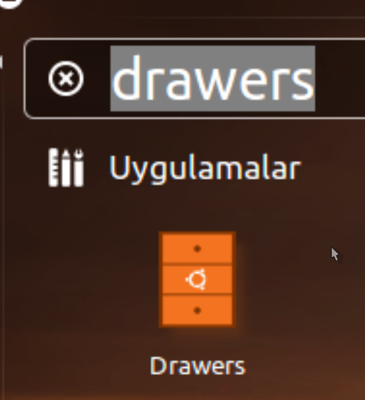
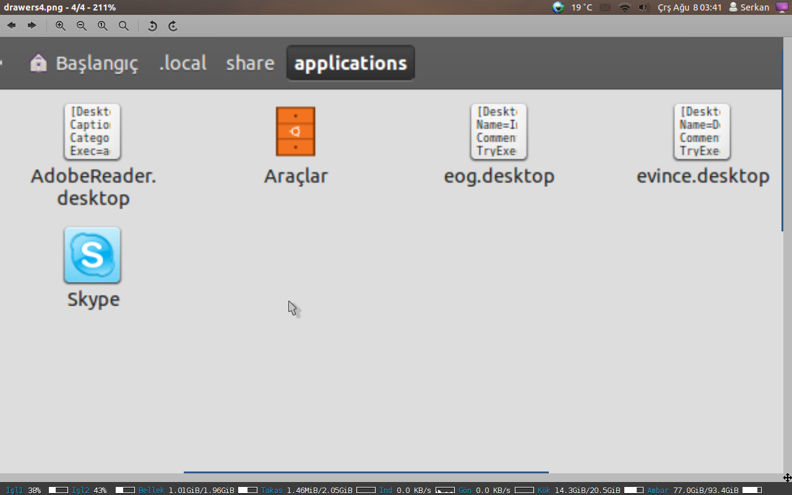

Unity Başlatıcısı, ekranımızın sol tarafında bulunan ve uygulamaları eklediğimiz, başlattığımız yerin adıdır. Gün geçtikçe elimizin altında bulunmasını istediğimiz uygulamaları buraya birer birer ekleriz. Ekledikçe çoğalır ve Başlatıcı karışık bir hâl alır. Doğası gereği biz uygulamaları seçmek için faremizle başlatıcıya yaklaştığımızda uygulama simgeleri aşağı veya yukarı doğru akar. Aralarından istediğimizi bulur ve açmak için tıklarız.
Peki, bu şekilde çalışmak yerine dilediğiniz uygulamaları gruplayarak başlatıcıda tutsanız ve daha sonra tek tıkla aralarından istediğinizi seçebilseniz? Evet, bunu yapmanın farklı yolları mevcut; ancak kısa süre önce geliştirilmeye başlanan ve süratle yol kat eden Drawers isimli uygulama bunu son derece basit ve etkili bir biçimde yapıyor. Hem de sadece uygulamalarla sınırlı kalmadan, her türlü dosyanızı ekleyebileceğiniz şekilde çalışıyor. Unity sayesinde seçkeyi kullanarak klavye ile uygulamaları rahatlıkla açabiliyoruz, fakat İnternet üzerindeki ekran görüntülerinde kullanıcıların birçoğunun hâlâ Başlatıcıya uygulama eklediklerini ve fare ile açtıklarını görebiliyoruz. Hâliyle, başlatıcı ve onun düzenini korumak bazılarımız için hâlâ bir gereklilik gibi görünmekte.
Uygulamanın nasıl çalıştığına göz atmadan önce kurulumundan bahsedelim. Drawers depolarda bulunmuyor, kendisini kurmak için harici bir depo, yani PPA eklemeniz gerekiyor. Aşağıdaki komutları uygulayarak bunu basitçe yapabilirsiniz.
sudo add-apt-repository ppa:ian-berke/ppa-drawers
sudo apt-get update
sudo apt-get install drawers
Şimdi uygulamanın nasıl çalıştığını bir örnek üzerinden anlatalım. Örneğimizde elimizin altında sürekli bulunmasını istediğimiz uygulamaları toplayalım. Drawers basit bir araç. Kurduktan sonra Unity seçkesini kullanarak kendisini çalıştırabilirsiniz.

Uygulamayı açtığınızda sizden bir adet isim isteyecektir. Bu kullanacağınız çekmecenin ismi olacak. Uygulama, oluşturulacak bu şeye “Drawer” yani çekmece diyor. Zaten öntanımlı simgesi de çekmece. İsim olarak “Araçlar” diyor ve yolumuza devam ediyoruz.

İsmi girip onayladıktan sonra Drawers çekmecemizi oluşturacak ve bize ilgili bilgileri verecektir.

Burada kabaca çekmecemizin oluşturulduğu, nerede olduğu ve nasıl kullanacağımız anlatılmakta. Çekmecemizi kullanmak için basitçe şunu yapıyoruz: Ev dizinimiz içindeki gizli olan .local dizini altındaki share/applications dizinine gidiyoruz. Bunu zaten çekmece oluşturulduktan sonra karşımıza çıkan dialog ekranında da görebiliyoruz. Tıklayarak hemen gidebiliriz bu dizine. Eğer bir şekilde bu ekranı kapattıysanız ev dizini içindeyken ctrl+h ile gizli dizinleri görebilir ve .local/share/applications dizinine gidebilirsiniz. Bu dizinin görünümü şuna benzer şekilde olacaktır:

Gördüğümüz üzere yeni oluşturduğumuz çekmecemiz ilgili dizinde bulunuyor. Şimdi, bu çekmeceyi tutup Unity Başlatıcımıza sürüklüyoruz ve istediğimiz yere bırakıyoruz.

Artık çekmecemiz Başlatıcıya eklendi ve kullanımıza hazır. Kendisine tıkladığımızda küçük ve boş bir pencerenin açıldığını göreceksiniz. Henüz hiçbir uygulama eklemediğimiz için kendisi boş durumda. Çeşitli yollarla uygulama ekleyebiliriz bu çekmeceye. Örneğin Unity seçkesinde uygulamayı bulup bu pencereye sürükle bırak yöntemini kullanabiliriz. Eğer masaüstünde bir başlatıcı varsa buradan sürükleyip bırakabiliriz. Öntanımlı olarak çekmece penceremiz sürekli pencerelerin üzerinde durmuyor. Bunu aşmak için boş olan bu çekmecenin sağ üst tarafında gördüğünüz oka tıklayın ve üçüncü simgeyi (raptiye) kullanın. Böylece artık çekmece tüm pencerelerin üzerinde sabitlenmiş olacak. Buradan aynı zamanda düzenleme ve kapatma işlemleri yapılabilir. Bu kısma yazının ilerleyen bölümünde değineceğimiz için elimizin altında bulunması gereken uygulamaları bu çekmecemize ekleyerek yolumuza devam ediyoruz.
Örnek olması açısından ben altı adet uygulamayı çekmeceye ekledim. Öntanımlı olarak bir sırada beş adet uygulama bulunduran Drawers, bu sayıdan sonra bir sonraki sıraya geçiyor.

Çekmecemizin son hâli bu şekilde. Son hâline dikkatle bakacak olursanız ilk durumda sağ üstteki ok yok, zira çekmecemizin boyutu büyüdüğü için artık simgeleri üst çubukta görebiliyoruz. Bu simgelerden ilki çekmecemizi düzenlemeye yarıyor. Tıkladığımızda karşımıza şöyle bir araç çıkacaktır:

Buradan simge, yazı tipi boyutu, bir sırada kaç adet uygulama bulunacağı, çekmecenin ekran üzerindeki konumu (zira çekmece sürüklenemiyor ekran üzerinde), şeffaflık ve diğer ayarlar yapılabiliyor. Bazı ayarların etkin hâle gelmesi için çekmecenin kapatılıp yeniden açılması gerekebiliyor, örneğin yazı tipi boyutu. İlerleyen zamanlarda bu gibi ufak tefek sorunların aşılacağını düşünüyorum. İkinci simge çekmeceyi kapatmaya yarıyor. Üçüncü simge ise çekmeceyi tüm pencerelerin üzerinde tutmaya yarıyor.
Çekmeceye ulaşmak için Başlatıcıdan tıklamak yeterli. Fakat uygulamaları açmak için illa çekmecenin kendisini açmamız gerekmiyor. Uygulamanın güzel özelliklerinden biri de sizin için Unity hızlı listesini hazırlaması. Kısacası çekmeceye sağ tıklayarak barındırdığı uygulamaları görüp istediğinizi tek tıkla açabilirsiniz.

Anlatımı biraz uzun olsa da aslında Drawers ile bu şekilde bir çekmece hazırlamak çok kısa zaman almakta. Drawers’ın güzel yanı sadece uygulamalarla sınırlı kalmaması. Örneğin işiniz için üzerinde çalıştığınız bir dosyalar topluluğu var ve siz bunu bir dizinde saklıyorsunuz. Sürekli bu dizine gidip dosyaları açmak yerine dosyalarınızı tutması için bir çekmece oluşturabilirsiniz.

Yazının sonunda uygulamanın sahip olduğu ve bizi derinden etkileyen bir sorunundan bahsedelim. Uygulama şimdilik Türkçe karakter barındıran dizin ve dosyalarda doğrudan çalışmıyor ne yazık ki. Kısacası dosyalarınız Türkçe karakter barındıran bir dizindeyse veya dosyalarınızın isminin kendisinde Türkçe karakter varsa Drawers bu uygulama ve dosyaları doğrudan açamıyor. Dolaylı yoldan düzeltmenin bir yolu mevcut. Mesela çekmecenize ismi “çalışma3.txt” olan bir dosya eklediniz. Bu dosyaya tıkladığınızda Drawes açamayacaktır. Altında yatan sebep ise ilgili masaüastü dosyasına doğru karakterlerle giriş yapamaması. Düzeltmek için çekmece dosyanızın ismi neyse şu şekilde açın: Benim iş için kullandığım çekmecenin ismi İş-İcabı olduğu için masaüstü dosyası İş-İcabı.desktop isminde ~/.local/share/applications altında oluşturulmuş durumda. Dikkat, eğer dizine gidip çift tıklarsanız bu dosyaya doğrudan çekmece açılır. Bizim amacımız bu değil, dosyayı düzenlemek istiyoruz. Bu sebepten ötürü şu komutla dosyamızı açıyoruz:
gedit ~/.local/share/applications/İş-İcabı.desktop
Dosya içeriğinde şu şekilde girişler göreceksiniz.
Actions=calisma1.txt;calisma2.odt;calisma3.ods;%C3%A7al%C4%B1%C5%9Fma3.txt
[Desktop Action %C3%A7al%C4%B1%C5%9Fma3.txt]
Exec=xdg-open "/home/serkan/calismalar/%C3%A7al%C4%B1%C5%9Fma3.txt"
Name=%C3%A7al%C4%B1%C5%9Fma3.txt
Bu dört bölümü doğru isimle düzenlerseniz, çekmeceniz düzgün bir hâl alacaktır. Gedit üzerinden toplu değiştirme özelliğini kullanabilirsiniz. Kısacası %C3%A7al%C4%B1%C5%9Fma3 -> çalışma3 değişikliği yaparsanız Değiştir üzerinden sorun çözülüyor. Tabii bu çok hoş bir durum ve çözüm değil. Uygulama henüz çok yeni olduğu için bu sorunun aşılmasını beklemek zorundayız. Ancak geliştiricisi sorunlarla çok ilgili ve bu konuda açılan hata kaydına 1 saat içinde cevap vermiş durumda. Hata kaydını ve gelişmeleri şuradan [1] takip edebilirsiniz.